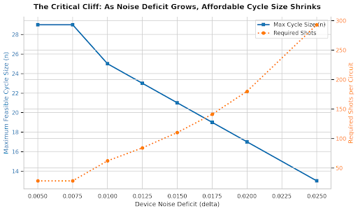
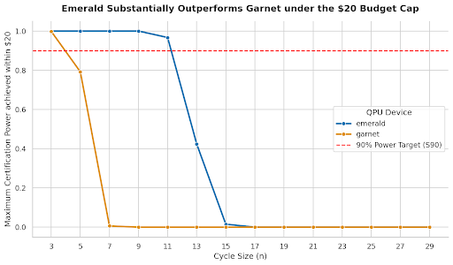

C21 run
plan
An Emerald experiment with 42 circuits, 110 shots per circuit, and a declared deficit of δ = 0.0150 within the $20 limit.
Pre-hardware analysis · Emerald · no hardware result yet
Odd-cycle correlations create a measurable quantum advantage.
An odd cycle cannot be colored with two colors without one contradiction.
A result is certified only when the hardware evidence clears the classical ceiling using the one-sided exact 3σ test.
The same local circuit structure covers all 42 questions.
Every question uses the same four-gate structure; only Alice’s and Bob’s local rotation angles change.
A small change in device deficit can move the affordable cycle frontier.
Device deficit compresses the quantum advantage available for statistical certification.

C21 fits the cap, but the 90% sizing target does not.
Declared planning point
δ = 0.015Emerald · 1 twirl · C21
Sets the expected win rate to 0.983602Certification sizing · Emerald
The 90% sizing target would cost $23.69, exceeding the cap by $3.69.
At the submitted 110 shots per circuit, 33% of repetitions fail the certification gate even if δ = 0.0150 is accurate.
C21 fits the budget with a meaningful certification risk.
The $0.01 budget remainder buys the largest submitted cycle, not a 90%-power guarantee: the same C21 plan needs 165 shots per circuit for that target.
The submission favors cycle size over repeatable certification power.
Largest cycle that fits the cap at the declared deficit, with the risk disclosed rather than hidden.
What we are not optimizingRepeatable 90% certification at C21. That target needs 55 more shots per circuit and is not feasible under the $20 cap.
Emerald is stronger—but C21 remains below 90%.

Interpretation
Emerald leaves more statistical room than Garnet under the same $20 cap.
The submitted C21 plan still reaches only 67% modeled certification power.
The hardware result will test the noise estimate.
C21 must clear the exact 3σ threshold.
Current status: submission candidate validated by the plan checker; no hardware claim yet.